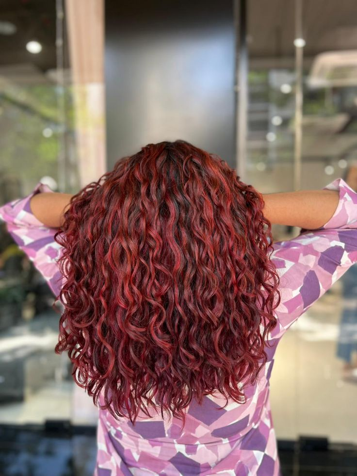

The Curl Edit
Curl knowledge, decoded.
Curly girl method India, scalp care, refresh routines, ingredient deep-dives — your curly hair education.

Curl learnings from 2025
A year of texture experiments, distilled.
Dandruff or just dry scalp?
How to tell the difference, and what actually works.

Coloring curls without damage
A low-poo approach to bold curl colour.
Curls on the red carpet
From Bollywood to Vogue Mexico — texture is taking centerstage.

How to refresh day-3 curls
Less product, more technique.

The CG method, simplified for India
Why monsoon and hard water need their own playbook.